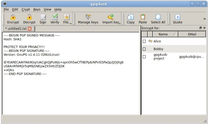
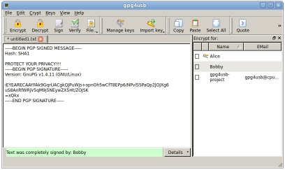
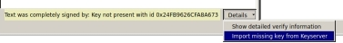

Cómo verificar un mensaje
Hay tres pasos para verificar un mensaje Vamos a suponer que Alice quiere verificar un mensaje firmado que le ha llegado.
PASO 1: Copiar el texto a la caja del editor de textos.
Primero, Alice copia el texto en la caja del editor de texto.

PASO 2: Clic en 'Verificar'
Segundo, ella hace clic en el botón 'Verificar' de la barra de herramientas.

PASO 3: Leer el mensaje verificado
Ahora Alice lee la información de verificación que aparece en la parte de abajo. Para obtener una información más detallada, hacer clic en el botón 'Detalles' en la parte inferior y escoger la opción deseada.

NOTA: Si la llave no está presente en su listado de llaves, entonces aparece el ID (identificador digital) de la llave.

Si la llave no está presente, puede intentar importarla desde el servidor de llaves por defecto (el que usted puso en el menú 'Configuración').

Previo: Firmar un mensaje | Principal | Siguiente: Cifrar un archivo